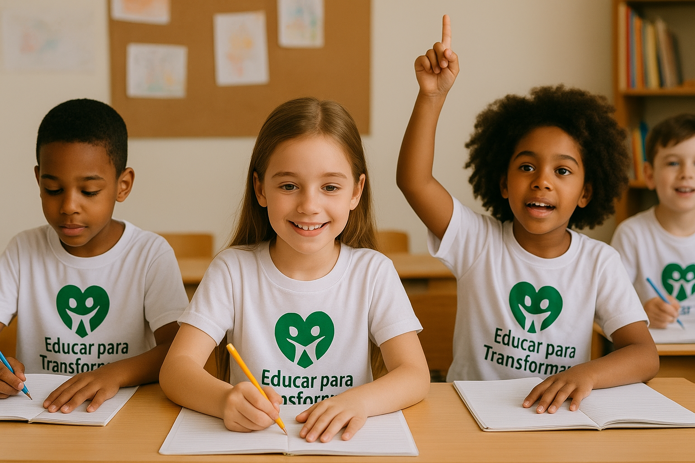
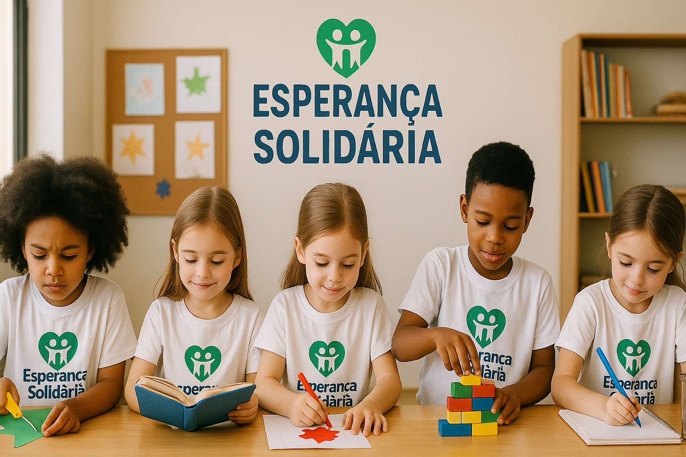

Educar para Transformar
O projeto oferece reforço escolar, aulas de informática e oficinas de leitura para crianças de 6 a 14 anos.
Educação AtivoDesenvolvemos projetos que promovem educação, cultura, esporte e inclusão social. Cada iniciativa é cuidadosamente planejada para gerar impacto positivo e duradouro na vida das pessoas atendidas.
O projeto oferece reforço escolar, aulas de informática e oficinas de leitura para crianças de 6 a 14 anos.
Educação AtivoUtiliza o esporte como ferramenta de inclusão social, oferecendo aulas de futebol, vôlei, basquete e judô.
Esporte AtivoDesenvolve talentos artísticos através de oficinas de teatro, música, dança e artes visuais.
Cultura AtivoOferece apoio integral às famílias incluindo orientação psicológica, cursos profissionalizantes e cestas básicas.
Assistência AtivoO projeto Educar para Transformar oferece reforço escolar, aulas de informática e oficinas de leitura para crianças de 6 a 14 anos. Com uma equipe de 25 educadores voluntários, atendemos 500 crianças semanalmente.
O Esporte e Cidadania utiliza o esporte como ferramenta de inclusão social, oferecendo aulas de futebol, vôlei, basquete e judô para jovens de 10 a 18 anos.
Mais de 300 jovens participam regularmente das atividades, desenvolvendo não apenas habilidades esportivas, mas também valores como disciplina, trabalho em equipe e respeito.
Desenvolvemos talentos artísticos através de oficinas de teatro, música, dança e artes visuais, promovendo a expressão cultural e o desenvolvimento criativo.
Apresentação do coral infantil - Concerto de Natal 2024
O projeto Família Solidária oferece apoio integral às famílias em situação de vulnerabilidade, incluindo orientação psicológica, cursos profissionalizantes e distribuição de cestas básicas.
O voluntariado é o coração da nossa organização. Contamos com pessoas dispostas a doar seu tempo, conhecimento e amor para transformar vidas.
| Área | Atividades | Disponibilidade | Vagas |
|---|---|---|---|
| Educação | Reforço escolar e alfabetização | 2x por semana (tarde) | 10 |
| Esportes | Instrutor de atividades esportivas | Finais de semana | 5 |
| Cultura | Oficinas de arte e música | 1x por semana | 8 |
| Administrativo | Apoio em gestão e comunicação | Flexível (remoto) | 6 |
| Saúde | Atendimento psicológico | Agendamento prévio | 4 |
Sua doação transforma vidas! Todo recurso arrecadado é aplicado diretamente em nossos projetos, com total transparência e prestação de contas.
Você pode fazer doações únicas ou mensais através de:
Aceitamos doações de:
| Valor | Impacto |
|---|---|
| R$ 30,00 | Kit de material escolar completo para 1 criança |
| R$ 50,00 | Cesta básica para 1 família por 1 mês |
| R$ 100,00 | Uniforme esportivo completo para 2 crianças |
| R$ 200,00 | 1 mês de aulas de reforço escolar para 5 crianças |
| R$ 500,00 | Compra de instrumentos musicais para oficina |
Pessoas físicas e jurídicas podem deduzir as doações do Imposto de Renda:
Seja voluntário, faça uma doação ou simplesmente divulgue nosso trabalho. Cada ação conta!